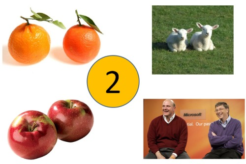
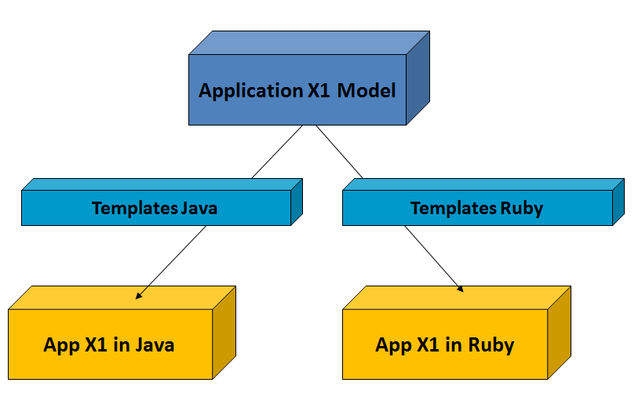

Programming and History
- Many programming languages (Python, Java, Ruby, C#, ...)
- Many libraries and frameworks
- Many technologies (SQL, NoSQL, ...)
- Many interfaces (desktop, web, mobile, ...)
But many applications are the same
Raise the Level of Abstractions

Models and Applications

THE END
BY Angel 'Java' Lopez / www.ajlopez.com / @ajlopez